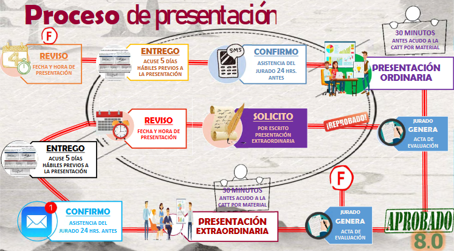

¿En qué consisite el Trabajo Terminal II?
Aqui se implementa un proyecto tecnológico ó de investigación, con base en técnicas y herramientas de desarrollo, así como documentación sistemática, basado en el TTI.
Para acreditar se requiere:
- Calificación mínima de 8 (titulación curricular)
- Asistencia mínima de 90%
- Evaluación con calificación definitiva al término del semestre respectivo
En el caso de no acreditar TTII, el alumno tendra que inscribir TTR
Proceso
El proceso del TTII consta de varias partes:
-
Incripciones a TTI
Se hace la inscripción de manera individual, cada miembro del equipo tiene que inscribirse en la CATT

-
Asignación de Sala de Trabajo Terminal,Profesor de seguimiento y Titular
Se asignara una sala donde trabajaran, un profesor que dara seguimiento a tu trabajo y finalmente un profesor que subira la calificación.

-
Presentación con profesor de seguimiento y responsable de sala
Se presenta con el profesor de seguimiento y responsable de sala, con los que iras trabajando durante todo el TTI

-
Asignación de Presentaciones de TTII
Estar al pendiente de cuando te toca presentar tu TTI
-
Entrega de Avances del proyecto
Se presentan avances de seguimiento a directores/ras, sinodales y profesor/a de seguimiento y se les solicita firmen el Acuse de recibido

-
Entrega de ACUSE
Se entrega el Acuse de Recibido a la CATT (cinco días previos a la presentación)

-
Presentación
Se presenta el TTI llevando a cabo los pasos mostrados en la imagen
